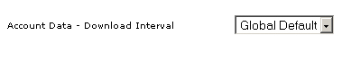
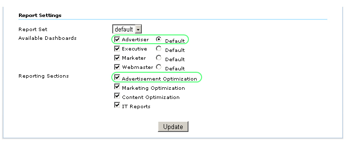
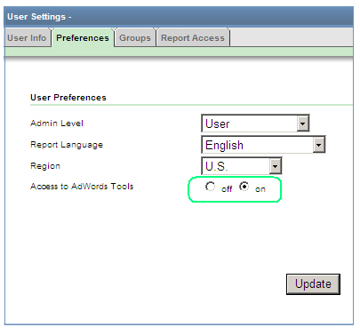
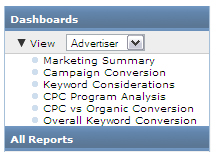
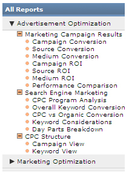

Integração de Urchin com o Google AdWords
O Urchin 6.6 foi integrado com diversos recursos do Google AdWords, por exemplo, a Ferramenta de palavras-chave, o Google AdWords Editor e as recomendações do Orçamento diário de campanha.
Antes de usar essas ferramentas, os dados de CPC (cost per click ou custo por clique) do Google AdWords e os dados de conta devem ser, primeiramente, baixados. O download dos dados de CPC do Google AdWords só poderá ser feito manualmente via configurações de origem de CPC ou via programador de CPC.

O download dos dados de conta do Google AdWords, que refletem sua estrutura de conta atual no Google AdWords, é feito automaticamente de acordo com o parâmetro "Dados de conta – Intervalo de download" para uma origem de CPC em particular ou de acordo com as configurações de Atualização de origem de CPC globais. Se quiser fazer download dos dados de conta do Google AdWords, defina o parâmetro "Dados de conta – Intervalo de download" para cinco minutos.

A nova visualização "Anunciante" e a nova seção "Otimização do anúncio" foram introduzidas para usuários concentrados em trabalhar com recursos relacionados ao Google AdWords. A visualização "Anunciante" e a seção "Otimização do anúncio" foram alternadas ou não no perfil das configurações do Relatório.

No Urchin 6.6, também é possível ativar ou desativar a visualização "Anunciante" e a seção "Otimização do anúncio" para usuários individuais ou grupos. Vá para Configurações do perfil -> Usuários. Em Acesso concedido, escolha o usuário e clique em Substituir painel. Na janela aberta, desative “Usar padrões de perfil”. Marque ou desmarque os painéis ou as seções de relatórios e clique em Atualizar.

O acesso às Ferramentas do Google AdWords pode ser concedido/cancelado ao usuário correspondente via Configurações do usuário -> Preferências.

A visualização "Anunciante" contém o painel Resumo de marketing e cinco relatórios básicos estendidos com as ferramentas e os links do Google AdWords:

A seção do relatório "Otimização do anunciante" consiste em três grupos de relatórios (Resultados de campanha de marketing, Marketing em mecanismos de pesquisa e Estrutura de CPC) e inclui os seguintes relatórios:

Uma variedade de novos recursos relacionados ao Google AdWords, por exemplo, a Ferramenta de palavras-chave, o Gerenciador de tags e exportar para o arquivo AES do Google AdWords Editor, está incluída nos relatórios da seção "Otimização do anúncio":


Alertas de orçamento
Alerta de orçamento é uma mensagem com base em recomendações de orçamento diárias disponíveis no Google AdWords. Ele indica que o orçamento diário da campanha do Google AdWords pode ser melhorado. Aumentar seu orçamento para o valor recomendado pode maximizar a exposição de seu anúncio e ajudá-los a receber cliques por mês.
Para ver as recomendações, passe o cursor do mouse sobre o nome da campanha na área de Alertas do Google AdWords. Uma caixa de texto com informações sobre a campanha escolhida aparecerão: 
Para atualizar as informações dos Alertas de orçamento do Google AdWords, clique no link “Programar atualização agora”.

Alertas de orçamento são disponibilizados nos relatórios Resumo de marketing, Conversão da campanha e ROI da campanha na Visualização anunciante e na seção Otimização do anúncio.